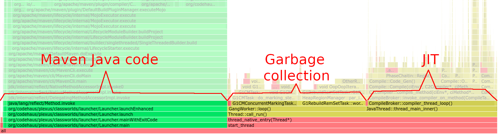

Maven
my life is short!
Peter Palaga
About me

Projects I build often
| Lines of Java Code1 | Maven modules2 | mvn clean install |
|
| Camel Quarkus | 93K | 1371 | 23.5 min |
| Camel | 1609K | 612 | 32.6 min |
| Quarkus | 594K | 1161 | 11.1 min |
1) cloc --include-lang=Java .
2) mvn clean && find . -type f -name 'pom.xml' | wc -l
Waiting
for
a
Maven
build...
Image from imgflip
Agenda
- Skipping mojos
mvnda.k.a. Maven Daemon- Vertical scaling
- Incrememental builds with GIB
Why to skip mojos?
- After pulling from team git repository
- Source tree in a clean state
- Checked by the team CI
- Tests, and various source checks can be skipped
Find candidates for skipping (1/3)
- A Maven extension
- Outputs per-mojo per-module exec. times
- Exec. times not summed up per mojo across modules - limited usefulness
- An example
Find candidates for skipping (2/3)
- A Maven extension
- Allows sorting by execution time
- An example
Find candidates for skipping (3/3)
async-profiler or any other Java profiler
export MAVEN_OPTS="-agentpath:/path/to/libasyncProfiler.so=start, event=cpu,file=mvn-profile.html"- Outputs a flame graph
- Summed mojo execution times are easy to see
mvn clean install -DskipTests -Dformatter.skip -Dimpsort.skip ...
# in Camel Quarkus
All possible skips for this project
$ mvn clean install \
-DskipTests \
-Dformatter.skip \
-Dimpsort.skip \
-Denforcer.skip \
-Dcamel-quarkus.update-extension-doc-page.skip \
-Dskip.installyarn \
-Dskip.yarn \
-Dlicense.skip \
-Dquarkus.build.skip
-Dgmaven.execute.skip # underway https://github.com/groovy/gmaven/pull/27
...
[INFO] BUILD SUCCESS
[INFO] ------------------------------------------------------------------------
[INFO] Total time: 04:34 min # down from 23:27 min by mvn clean install -DskipTests
public class SomeMojo extends AbstractMojo {
@Parameter(property = "some.skip", defaultValue = "false")
boolean skip;
@Override
public void execute() {
if (skip) {
getLog().info("Skipping as requested by the user");
return;
}
...
}
}- Resolve and download plugin dependencies
- Setup a classloader, load the necessary classes
- Instantiate the Mojo
- Inject fields (potentially expensive objects)
- Call
Mojo.execute()
...
maven-compile-plugin maven-jar-plugin maven-install-plugin
full
!quickly
maven-enforcer-plugin maven-surefire-plugin maven-failsafe-plugin groovy-maven-plugin
$ mvn clean install -Dquickly
...
[INFO] BUILD SUCCESS
[INFO] ------------------------------------------------------------------------
[INFO] Total time: 04:01 min # down from 04:34 min by
#
# mvn clean install -DskipTests -Dformatter.skip ...
#
Java is fast *
* When warmed up
Java Warmup costs
- JVM boot
- JIT (Just in Time) compilation
Cost of starting Maven
Measurable through a simple experiment:
package org.apache.maven;
public class DefaultMaven implements Maven {
...
private MavenExecutionResult doExecute( MavenExecutionRequest request ) {
System.out.println("End of Maven init: " + System.currentTimeMillis());
request.setStartTime( new Date() ); // Maven measures from here
}
...
}$ echo $(($(date +%s%N)/1000000)) && mvn clean install -Dquickly
1634117024986
...
End of Maven init: 1634117025765
$ echo "$((1634117025765-1634117024986))"
779 # Maven start time in millisecondsCost of JIT compilation
mvn clean install -DskipTests -Dformatter.skip -Dimpsort.skip ...
# in Camel Quarkus
Eliminate JVM warm up
- Have a long living Java process, a.k.a. daemon
- Pass build requests through a socket
- Like Gradle daemon, but for Maven
 - the Maven Daemon
- the Maven Daemon
https://github.com/mvndaemon/mvnd
- Started by Guillaume Nodet in 2019
- 24 releases since then
- Currently being donated to the ASF Maven Project

mvnd - how to install
Maven Daemon overview
|
⇄ |
Daemon
|
mvnd speed gains
| A build with | Many modules (relatively independent) cd camel-quarkus && \
|
Single modulecd camel-quarkus/extensions-core/core/deployment && \ |
||
-DskipTests |
-Dtest=CamelBeansUnremovableTest |
|||
mvn baseline |
4:01 min | 10.11 sec | 12.79 sec | |
mvnd 1st |
1:19 (3x) | 9.15 (1.1x) | 11.82 (1.1x) | |
mvnd 2nd |
1:04 (3.8x) | 2.37 (4.3x) | 5.26 (2.4x) | |
mvnd 3rd |
1:01 (4x) | 1.19 (5.3x) | 4.86 (2.6x) | |
| Gains through |
|
|
||
mvnd - Parallel builds
- Default number of threads:
Runtime.getRuntime().availableProcessors() - 1 -T<n>or-T<n>Csupported like with stock Maven
Maven builder
- Pluggable
buildersince Maven 3.2.1 - A strategy for scheduling and building modules
singlethreaded(default)multithreaded(with -T)
mvnd - Smart builder
- Custom
builderprovided bymvnd - Based on Takari Smart Builder

Local repository access
- Two modules may download the same artifact concurrently
- Solved in
mvnd0.7.0 (to be released) and Maven 4
Broken plugins
Plugins may do nasty things
- Mutable global state
- Race conditions
-1/--serial may help
Better: Report/fix the issue in the given plugin
mvnd drawbacks
- Blocks a few gigs of RAM (configurable)
- Better not on the CI
- Windows issues and testing catching up gradualy
- Class loader caching may have issues in some situations
mvnd --help
$ mvnd --help
usage: mvnd [options] [<goal(s)>] [<phase(s)>]
Options:
-am,--also-make If project list is specified, also build projects
required by the list
-amd,--also-make-dependents If project list is specified, also build projects
that depend on projects on the list
-B,--batch-mode Run in non-interactive (batch) mode (disables output
color)
-b,--builder <arg> The id of the build strategy to use
-C,--strict-checksums Fail the build if checksums don't match
-c,--lax-checksums Warn if checksums don't match
--color <arg> Defines the color mode of the output. Supported are
'auto', 'always', 'never'.
-cpu,--check-plugin-updates Ineffective, only kept for backward compatibility
-D,--define <arg> Define a system property
-e,--errors Produce execution error messages
-emp,--encrypt-master-password <arg> Encrypt master security password
-ep,--encrypt-password <arg> Encrypt server password
-f,--file <arg> Force the use of an alternate POM file (or directory
with pom.xml)
-fae,--fail-at-end Only fail the build afterwards; allow all
non-impacted builds to continue
-ff,--fail-fast Stop at first failure in reactorized builds
-fn,--fail-never NEVER fail the build, regardless of project result
-gs,--global-settings <arg> Alternate path for the global settings file
-gt,--global-toolchains <arg> Alternate path for the global toolchains file
-h,--help Display help information
-l,--log-file <arg> Log file where all build output will go (disables
output color)
-llr,--legacy-local-repository Use Maven 2 Legacy Local Repository behaviour, ie no
use of _remote.repositories. Can also be activated
by using -Dmaven.legacyLocalRepo=true
-N,--non-recursive Do not recurse into sub-projects
-npr,--no-plugin-registry Ineffective, only kept for backward compatibility
-npu,--no-plugin-updates Ineffective, only kept for backward compatibility
-nsu,--no-snapshot-updates Suppress SNAPSHOT updates
-ntp,--no-transfer-progress Do not display transfer progress when downloading or
uploading
-o,--offline Work offline
-P,--activate-profiles <arg> Comma-delimited list of profiles to activate
-pl,--projects <arg> Comma-delimited list of specified reactor projects
to build instead of all projects. A project can be
specified by [groupId]:artifactId or by its relative
path
-q,--quiet Quiet output - only show errors
-r,--resume Resume reactor from the last failed project, using
the resume.properties file in the build directory
--raw-streams Do not decorate output and error streams
-rf,--resume-from <arg> Resume reactor from specified project
-s,--settings <arg> Alternate path for the user settings file
-t,--toolchains <arg> Alternate path for the user toolchains file
-T,--threads <arg> Thread count, for instance 2.0C where C is core
multiplied
-U,--update-snapshots Forces a check for missing releases and updated
snapshots on remote repositories
-up,--update-plugins Ineffective, only kept for backward compatibility
-v,--version Display version information
-V,--show-version Display version information WITHOUT stopping build
-X,--debug Produce execution debug output
mvnd specific options:
--completion <string> Print the completion for the given shell to stdout.
Only --completion bash is supported at this time.
--purge Delete log files under the mvnd.registry directory
that are older than mvnd.logPurgePeriod
--status Prints the status of daemon instances registered in
the registry specified by mvnd.registry
--stop Stop all daemon instances registered in the
registry specified by mvnd.registry
-Djava.home=<path> Java home for starting the daemon
Env. variable: JAVA_HOME
-Djdk.java.options=<string> The JDK_JAVA_OPTIONS option
Default:
Env. variable: JDK_JAVA_OPTIONS
-Dmaven.multiModuleProjectDirectory=<path> The root directory of the current multi module
Maven project
-Dmaven.repo.local=<path> The path to the Maven local repository
-Dmaven.settings=<path>;-s,--settings <path> The location of the maven settings file
-Dmvnd.buildTime=<boolean> Log mojos execution time at the end of the build.
-Dmvnd.builder=<string>;-b,--builder <string> The builder implementation the daemon should
use
Default: smart
-Dmvnd.daemonStorage=<path> The directory under which the daemon stores its
registry, log files, etc. Default:
${user.home}/.m2/mvnd
-Dmvnd.debug=<boolean> If true, the daemon will be launched in debug mode
with the following JVM argument:
-agentlib:jdwp=transport=dt_socket,server=y,suspend=y,address=8000;
otherwise the debug argument is not passed to the
daemon.
Default: false
-Dmvnd.duplicateDaemonGracePeriod=<duration> Period after which idle duplicate daemons
will be shut down. Duplicate daemons are daemons
with the same set of discriminating start
parameters.
Default: 10 seconds
-Dmvnd.enableAssertions=<boolean> If true, the -ea option will be passed to the
daemon; otherwise the -ea option is not passed to
the daemon.
Default: false
-Dmvnd.expirationCheckDelay=<duration> The daemon will check this often whether it should
exit.
Default: 10 seconds
-Dmvnd.home=<path> The daemon installation directory. The client
normally sets this according to where its mvnd
executable is located
Env. variable: MVND_HOME
-Dmvnd.idleTimeout=<duration> A time period after which an unused daemon will
terminate by itself.
Default: 3 hours
-Dmvnd.jvmArgs=<string> Additional JVM args to pass to the daemon
-Dmvnd.keepAlive=<duration> If the daemon does not send any message to the
client in this period of time, send a keep-alive
message so that the client knows that the daemon
is still alive.
Default: 100 ms
-Dmvnd.logPurgePeriod=<duration> Daemon log files older than this value will be
removed automatically.
Default: 7 days
-Dmvnd.logback=<path> The location of the Logback configuration file the
daemon should use to configure its logging.
-Dmvnd.maxHeapSize=<memory_size> The -Xmx value to pass to the daemon
Default: 2G
-Dmvnd.maxLostKeepAlive=<integer> The maximum number of keep alive messages that can
be missed by the client before the client
considers the daemon to be dead.
Default: 30
-Dmvnd.minHeapSize=<memory_size> The -Xms value to pass to the daemon
Default: 128M
-Dmvnd.minThreads=<integer> The minimum number of threads to use when
constructing the default -T parameter for the
daemon. This value is ignored if the user passes
-T, --threads or -Dmvnd.threads on the command
line or if he sets mvnd.threads in
~/.m2/mvnd.properties.
Default: 1
-Dmvnd.noBuffering=<boolean> If true the log messages are displayed continuously
like with stock Maven; otherwise buffer the
messages and output at the end of the build,
grouped by module. Passing -B or --batch-mode on
the command line enables this too for the given
build.
Default: false
-Dmvnd.noDaemon=<boolean> If true, the client and daemon will run in the same
JVM that exits when the build is finished;
otherwise the client starts/connects to a long
living daemon process. This option is only
available with non-native clients and is useful
mostly for debugging.
Default: false
Env. variable: MVND_NO_DAEMON
-Dmvnd.pluginRealmEvictPattern=<string> Regexp pattern that will force eviction of the
plugin realms if one of its dependencies matches.
Default:
-Dmvnd.propertiesPath=<path> The location of the user supplied mvnd.properties
file.
Env. variable: MVND_PROPERTIES_PATH
-Dmvnd.registry=<path> The path to the daemon registry. Default:
${mvnd.daemonStorage}/registry.bin
-Dmvnd.rollingWindowSize=<integer> The number of log lines to display for each Maven
module that is built in parallel. The value can be
increased or decreased by pressing + or - key
during the build respectively. This option has no
effect with -Dmvnd.noBuffering=true, -B or
--batch-mode.
Default: 0
-Dmvnd.serial;-1,--serial Use one thread, no log buffering and the default
project builder to behave like a standard maven
Default: false
-Dmvnd.socketFamily=<string> Socket family to use
Default: inet
-Dmvnd.syncContextFactory=<boolean> The SyncContextFactory to use (can be either 'noop'
or 'ipc' for a server-wide factory).
Default: noop
-Dmvnd.threads=<string>;-T,--threads <string> The number of threads to pass to the daemon;
same syntax as Maven's -T/--threads option.
-Dstyle.color=<string>;--color <string> Whether the output should be styled using ANSI
color codes; possible values: auto, always, never
Default: auto
-Duser.dir=<path> The current working directory
-Duser.home=<path> The user home directory
mvnd value types:
boolean true or false; empty string is also interpreted as
true - so -Dmvnd.noBuffering is equivalent to
-Dmvnd.noBuffering=true
duration An unlabeled whole number of milliseconds or a
whole number followed by an optional space and a
unit which may be one of the following (in EBNF
notation): d[ay[s]], h[our[s]], m[in[ute[s]]],
s[ec[ond[s]]] or m[illi]s[ec[ond[s]]]. Examples: 7
days, 7days, 7d, 100 milliseconds, 100 millis,
100ms, 100
integer A whole number
memory_size An amount of memory as accepted by the -Xm* family
of HotSpot JVM options. Examples: 1024m, 2g, 5G
path A local file system path
string A string
mvnd UI
+/- - reveal/hide rolling log lines for the individual builder threads
CTRL+B - toggle between threaded and rolling views
Vertical scaling
Laptop vs. desktop
| A build with | Many modules (relatively independent)cd camel-quarkus && mvn[d] clean install -Dquickly
|
||
| Machine | Lenovo ThinkPad P1 Gen 3 Core i7 10850H 12 cores 2.7 GHz (baseline) |
|
Self made desktop AMD Ryzen Threadripper 1920X 12 cores, 24 threads 3.5 GHz (1.3x) |
mvn |
4:01 min | 3:42 min (1.1x) | |
mvnd 1st |
1:19 | 0:55 (1.4x) | |
mvnd 2nd |
1:04 | 0:42 (1.5x) | |
mvnd 3rd |
1:01 | 0:40 (1.5x) | |
Costs of vertical scaling
| Machine | Lenovo ThinkPad P1 Gen 3 Core i7 10850H 12 cores 2.7 GHz |
|
Self made desktop AMD Ryzen Threadripper 1920X 12 cores, 24 threads 3.5 GHz (1.3x) |
| Purchase price | 2630,- € (Oct. 2021) |
~1300 € (Feb. 2020, w/out 🖥️ ⌨️ 🖱️) |
|
| Power suply unit | 135 W | 650 W | |
| Idle | ~18 W* | ~60 W* | |
| Max | 129 W* | 278 W* | |
| 2h work session (builds, web browsing) |
0.06 kWh* | 0.21 KWh* | |
| €/year (0.3 €/kWh) | 23 € | 80 € |
*) Measured with a budget power meter from a hobby market
Incremental builds with
Gitflow Incremental Builder
(GIB)
What is GIB?
https://github.com/gitflow-incremental-builder/gitflow-incremental-builder
- A maven extension
- Compares the current topic branch with the reference branch
- typically
origin/mainororigin/master
- typically
- Build/test only the modules impacted by the change
GIB in Quarkus
https://github.com/quarkusio/quarkus/blob/main/.github/workflows/ci-actions-incremental.yml
Multiple steps to be able run tests on multiple nodes in parallel:
- Build the whole tree w/out tests and identify impacted modules
- Calculate test jobs
- Run test jobs in parallel
Compare the number of tests and execution times per pull request
Wrap up
Techniques to speed up Maven builds
- Skip unessential mojos
- Maven daemon to keep the building JVM warm
- Larger machine
- Incremental builds with GIB